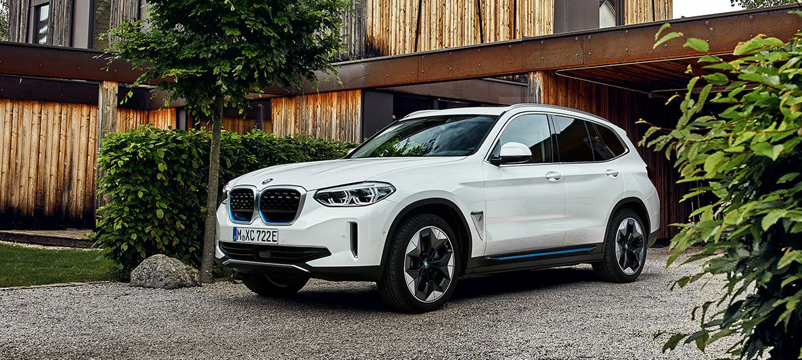
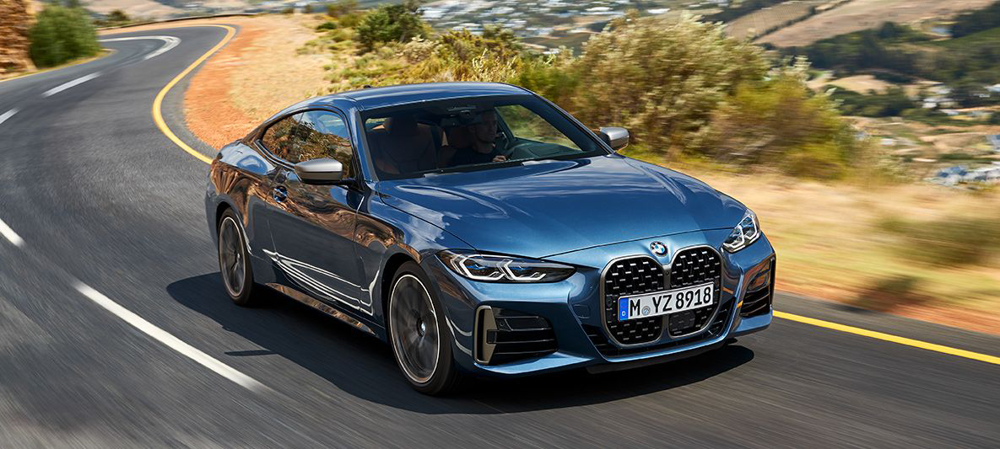

BMW&FUN
BMW&FUN
О нас
История Bmw
Видео
Шутки
Новости и события

Первый в мире BMW
iX3
Первый от BMW автомобиль SAV (англ. Sports Activity Vehicle) с полностью электрической системой привода.
Узнать больше!
BMW GROUP ПРЕДСТАВЛЯЕТ НОВЫЙ BMW 6 СЕРИИ
GT.
Уникальная для представительского класса концепция BMW 6 серии GT обеспечивает комфорт на дальних расстояниях, привлекая ярким спортивным внешним видом. Более 50 000 единиц текущего поколения автомобиля продано по всему миру..
Узнать больше!

BMW GROUP ПРЕДСТАВЛЯЕТ НОВЫЙ BMW 4 СЕРИИ COUPE.
GT.
Автомобиль стал самобытнее и спортивнее, чем когда-либо, но сохранил верность традициям 4 серии Coupe. Производство модели начнется на заводе в Дингольфинге в июле 2020 года.
Узнать больше!
BMW M8 GRAN COUPE И BMW M8 COMPETITION GRAN COUPE.
BMW Group представляет BMW M8 Gran Coupe и его трековую версию BMW M8 Competition Gran Coupe.
Узнать больше!
НОВЫЙ BMW 7 СЕРИИ.
BMW продолжает совершенствовать линейку флагманских моделей класса люкс и представляет новый BMW 7 серии, который сочетает уверенный образ, утонченную элегантность, а также инновационные системы помощи водителю.
Узнать больше!
НОВЫЕ BMW X3 M И BMW X4 M И ИХ ВЕРСИИ COMPETITION.
BMW X3 M и BMW X4 M задают новые стандарты динамики, маневренности и управляемости в своих классах и на старте продаж сразу будут доступны одновременно в стандартной версии и в версии Competition. Модели Competition отличаются повышенной мощностью и более богатым оснащением.
Узнать больше!
ANDROID AUTO ПОЯВИТСЯ НА АВТОМОБИЛЯХ BMW В 2020 ГОДУ.
BMW Group расширяет возможности беспроводной связи в своих автомобилях, представив систему Android Auto™, которая будет доступна с 2020 года. Android Auto, новейшее дополнение к сервису BMW, позволит клиентам подключать смартфоны Android по беспроводной сети к своему транспортному средству и при этом получать доступ к полезной информации, такой как предполагаемые места назначения и предстоящие встречи, именно тогда, когда это необходимо.
Узнать больше!